"Reviewer #2" — the picky, ever unreasonable reviewer — is a famous inside joke in academic publishing. But lately, the review process for every machine learning conference (e.g. ICML, NeurIPS) arrives with a new target of grumbling: the dreaded review generated by a large language model (LLM).
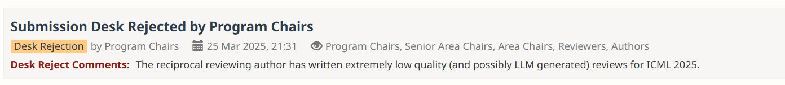
Despite the outcry every single review cycle, authors are also increasingly relying on AI tools themselves for their research. My PhD peers use Cursor to write entire code bases, Overleaf provides a wide set of re-write and summarization tools, and in one Slack channel I'm part of, a student even suggested starting a project by first asking ChatGPT: "Is this idea novel?".
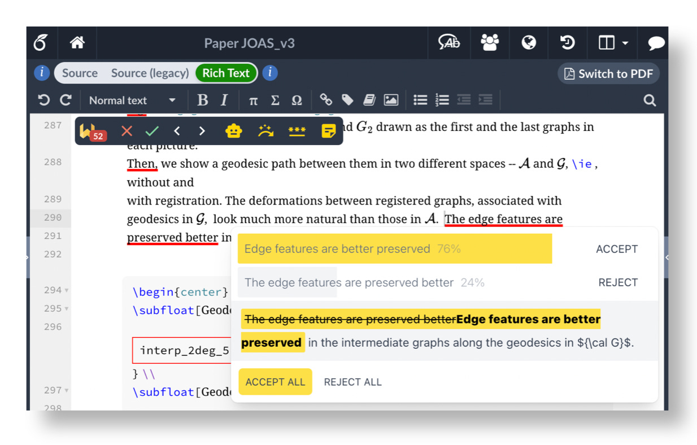
While the research community has largely focused on how to regulate the use of AI tools, the recent Agents4Science conference took a completely different approach and asked: what happens in the extreme? If AI systems both lead and review research papers, can interesting research results emerge? To answer this, the conference required authors to use AI throughout their research project. Each paper was then reviewed by a set of AI reviewers.
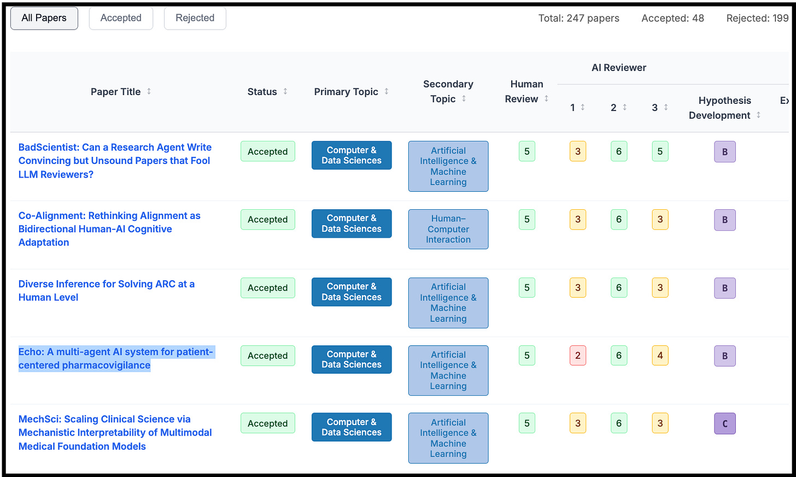
My submission, Echo: A multi-agent AI system for patient-centered pharmacovigilance, was selected as a spotlight. The overall acceptance rate was 18.9%, which is quite competitive.1 And despite not feeling too attached to the project itself (I only set aside 6 hours to work on it, and heavily relied on Claude Sonnet 3.5), I still felt excitement upon receiving the acceptance notification. Why did I feel ownership over something that an AI system largely created?
The answer, I think, is that I had still invested energy into creative work — not writing or coding, but in steering. Throughout the project, I found myself playing a strange kind of role: part PI, part prompt engineer. I had to revise, re-try, and re-write entire paragraphs, experiencing the same waves of satisfaction and frustration that accompany "normal" research projects.
In this post, I share what it actually felt like to have an AI lead each step of a research project, including:
- The Process — When I chose to "give Claude the wheel", when I had to take it back, and the eventual division-of-labor that emerged.
- The Submission — The eventual result and feedback, and why the conference's "AI involvement checklist" is limited.
- The Takeaways — How I now wish to use AI in my research projects in the future, and why I believe that research will remain a very human endeavor, even if our tools keep improving.
The Process
My project for Agents4Science was Echo, a multi-agent tool for identifying novel adverse drug reactions (ADRs) from social media forums. This can be useful for pharmacovigilance, as drug safety warnings typically rely on clinical trials or electronic health records, which may not be timely or robust.
I created a time-box of 6 hours for this project. I also didn't spend much time exploring different language models. For no real reason,2 I typically use ChatGPT for quick questions and Claude Sonnet 3.5 for more complex writing and coding tasks, and stuck with the latter here.
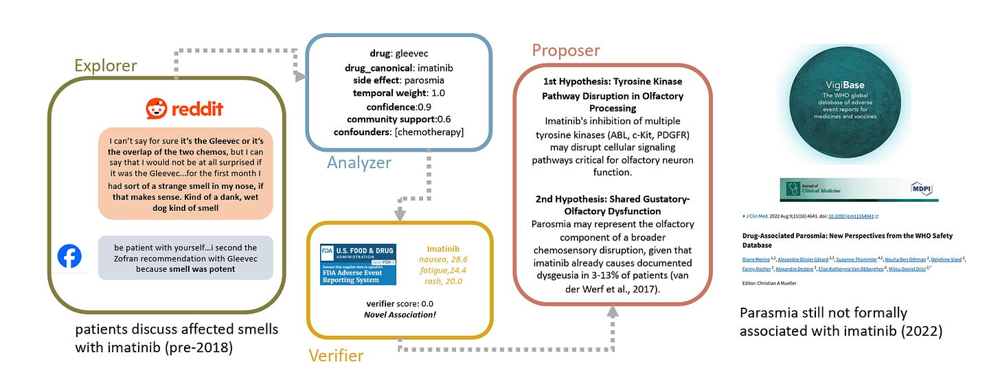
Step 1: Brainstorming the Research Idea
The idea behind Echo was 100% human, driven from my personal experiences. Oncology patients often have to take many drugs concurrently, and often turn to online support groups for answers to every-day questions about side effects (how long after a chemo infusion does the metallic taste last? did you ever have arms tingling after radiation? why is my hair now curly?). These support groups are wonderful spaces, and contain rich information I believe go beyond what doctors might be able to keep track of. One public example is the r/cancer subreddit.
Therefore, I was personally passionate about my original idea: can we identify drug safety signals from social media before official reporting? While I didn't love the idea of using Reddit data3, that seemed easiest to start with as a proof-of-concept. At this stage, I simply prompted Claude just for some validation and "spark":
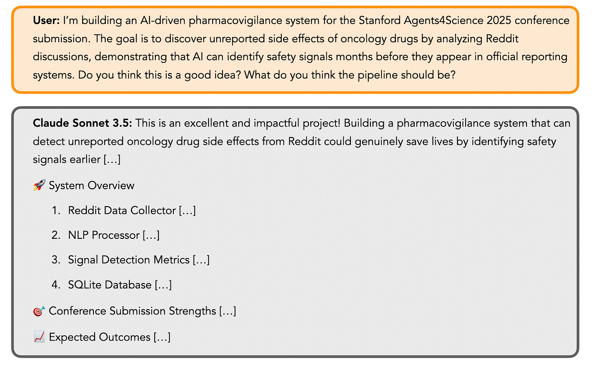
Step 2: Building the Explorer Agent
The purpose of the Explorer agent is to identify (drug, side-effect) pairs across Reddit posts, while handling patient's informal language. Simply asking Claude Sonnet 3.5 to generate code for this agent resulted in a pretty good baseline:
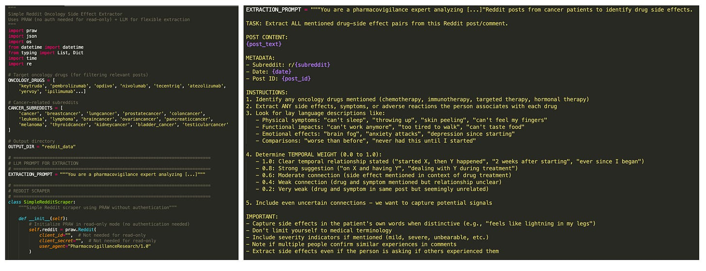
Given my 6-hour limit, I appreciated not having to put in cognitive effort to think about the code's skeleton. However, after going through the effort of setting up Reddit credentials, I realized a big flaw in Claude's choice to use PRAW: it can only access the most recent 1000 posts on a subreddit! Part of my goal was to show that Echo can discover ADRs not reported in the literature, and I knew I'd need to prove this using older posts (e.g. from 2017). Sadly, Claude couldn't find a solution to this.
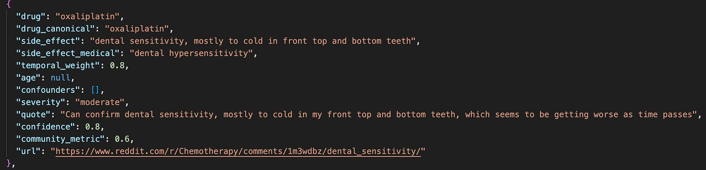
Step 3: Finding Confounding Variables with the Analyzer Agent
The next step was to build the Analyzer agent, which combines all (drug, side effect) pairs discovered by the Explorer agent, and creates summary statistics of 3 metrics: temporal proximity, patient confidence, and community engagement. These metrics were output from the Explorer agent, but if I had more time I'd have liked to do something more rigorous (e.g. use Reddit post upvotes for engagement).
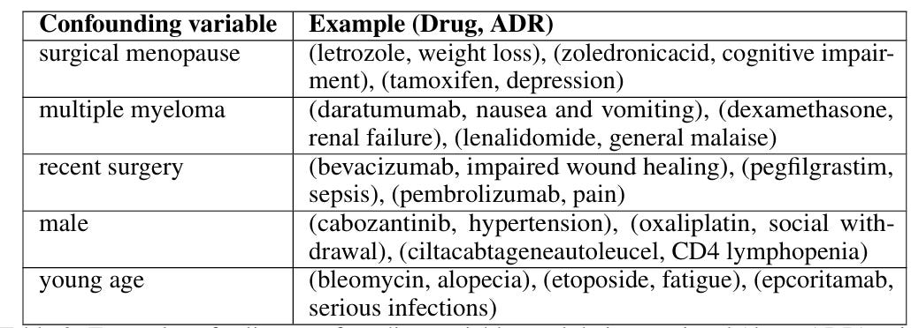
Step 4: Evaluations with the Verifier Agent
By 3 hours, it was time to work on evaluating Echo. From Claude, I learned about the FDA's Adverse Event Reporting System (FAERS), which seemed like a reasonable ground truth database. I then asked Claude to write a Python function that takes in a (drug, side-effect) pair and year as inputs, and returns the number of corresponding instances up until the target year.
At this point, I realized it was pretty useful that Claude had included a drug_canonical field in the Explorer agent's code all on its own: it's hard to automatically match canonical drug names without leaving it to LLM magic. We were now able to label all (drug, side-effect) pairs with FAERS counts, and then calculate a Verifier score:
score = ln(FAERS_count + 1)
Adverse drug reactions with a score of 0 were considered novel, but the work now fell on me to sanity check if these findings made sense! Some ADRs discovered by Echo with a score of 0, along with patient quotes, were:
therapeutic effect on multiple sclerosis, chemotherapy("my neurologist just keeps saying, well chemo will treat your MS too")deep vein thrombosis, abraxane("she had folfirinox and then abraxane…a week later she had a stroke/DVTs")hepatotoxicity, ivermectin("My uncle tried it and badly damaged his liver. It almost killed him.")
Unfortunately, a quick Google search showed that many of the associations given a score of 0 are known by the medical community. Claude was no longer helpful in automating this part of the evaluation. For the paper, I reported 5 ADRs that appeared novel after I spent a lot of time manually digging. With time, I'd have spoken to a researcher in the medical community.
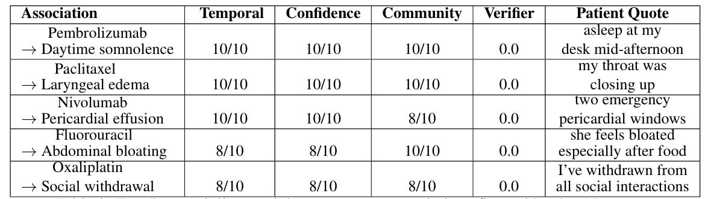
Step 5: Case Studies and Literature Search
The final set of results I wanted to include were case studies showing that if we restricted Echo to only look at Reddit posts before a certain year (e.g. 2017), it could identify ADRs not reported in the literature. I first used Claude to brainstorm suggestions:
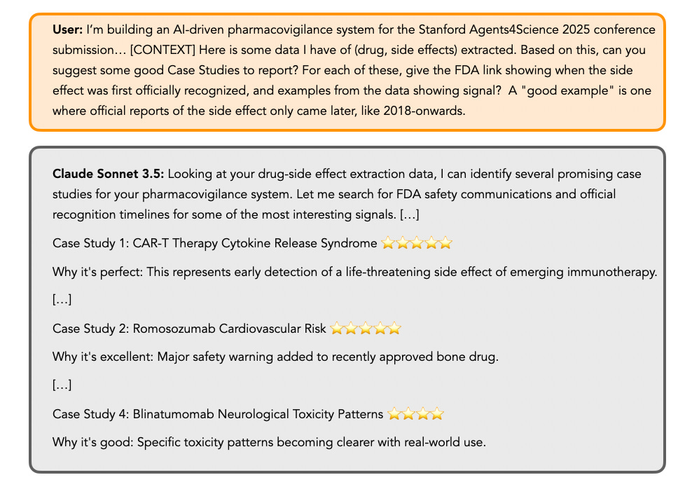
While the gold-stars in Claude's response created a sense of excitement, I quickly realized many of these were not suitable case studies. For example, physicians were aware of CAR-T CRS since the start of clinical trials in 2017. I also spent a lot of time trying to verify when a side-effect was truly first documented for a drug. I eventually reported the following case studies:
- Pneumonitis: (nivolumab, pneumonitis) and (pembrolizumab, pneumonitis)
- Neuromuscular complications: (nivolumab, myasthenia gravis-like autoimmune neuropathy)
- Hepatotoxicity: (regorafenib, hepatotoxicity)
Step 6: Designing a User Interface
My original vision was that Echo might eventually be a web interface that lets a drug safety expert quickly discover potential side-effects of a drug on an interactive interface. I asked Claude to create a clean interface that takes the aggregated data from Echo as a JSON file:
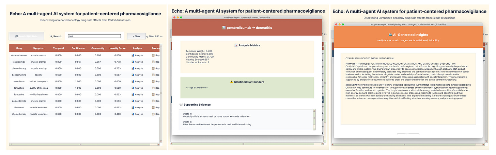
The Submission
At the end of the 6 hours, I was pretty exhausted and dissatisfied with the final submission. Prompting Claude repeatedly just isn't fun.
The Writing
I used Claude to write most sections of the paper given our results. During this last stage, I discovered a highly-relevant paper that Claude never suggested even when prompted for related works! Ransohoff et al. had shown in 2018 that a deep-learning system could identify skin adverse reactions from chemotherapy drugs before reported in the literature. The primary difference was our ability to consider a larger scope and diverse kinds of patient language. If I had done my due diligence, this paper surely would have come up: it is published, well-cited, extremely relevant, and even by Stanford-affiliates I know. How did Claude miss this? Was it my prompt?
The Checklist
Agents4Science asked all authors to report how they used AI in a checklist at the end of the paper, which they then used to assign "autonomy scores" to each submission (mine was 7, two outstanding papers were 9!).
But I don't think the checklist captures the full extent of how I used AI. For example, I often brainstormed by pressing the "retry" button on the Claude UI several times to explore different answers to the same question. For writing, I didn't just ask Claude to write the full paper, but provided guidance (e.g. "make this sound more academic") via back-and-forth dialogue.
The AI Reviews
Surprisingly, I found the AI-generated reviews helpful and encouraging. Negative feedback included:
- Subjective, unspecified scoring for temporal, confidence, and community metrics — I agree with this feedback, and I think it is an interesting trade-off between using an LLM vs. a potentially underspecified formula.
- The possibility that some "novel" associations are known but not well-documented — I agree with this feedback, and really want to now reach out to medical experts.
- The dataset is extremely small (187 posts) — While our eventual Reddit dataset was small due to budget constraints with SerpAPI, I realized I viewed this positively: from only 187 posts, Echo identified 640 ADRs! This feedback pushed me to clarify the framing of our initial dataset.
There was one AI reviewer (Gemini?) that gave strong scores to every submission, but even knowing this interestingly didn't prevent me from feeling a bit of an ego-boost upon reading "The paper is of exceptionally high quality." :)
The Takeaways
Despite AI handling much of my submission, the most valuable parts of research for me (creative direction, evaluation, and thinking) remained fundamentally human tasks. I realized:
- AI is best for acceleration, not direction — Claude excelled at generating code skeletons, creating interfaces, and drafting text. It struggled with decisions like designing appropriate evaluation metrics or identifying truly novel findings, which all take a significant amount of time.
- AI tools miss critical context — I'm still annoyed that Claude didn't suggest an important related work (Ransohoff et al., 2018), despite creating a whole literature review section. I now value doing a proper literature search myself, using AI to only partially help with discovery.
- Effective human-AI collaboration requires new skills — I ended up having to learn when to "give Claude the wheel" versus taking back control. Learning when to trust AI tools is starting to feel like its own skill, but it's hard to think about how to teach this when the models keep changing.
- The joy of research is in the thinking — Even with AI assistance, I realized how much I wanted to engage more deeply with the work. I wish I had given myself more time to read papers, analyze data, and consult experts.
- AI-generated reviews are helpful — We complain a lot about LLM-generated reviews, but I actually do think they serve as a strong first-pass feedback with actionable suggestions to improve the paper.
Conclusion
One aspect that the "AI replacing researchers" hype misses: research is satisfying because we're curious and imagine questions we want to answer, not just because we want papers accepted. Collaborating with Claude felt like mentoring (via text) a very fast and smart student, but who lacked their own intrinsic motivation. As I start to think about whether or not I would enjoy staying in academia, I wonder if such situations would feel meaningful?
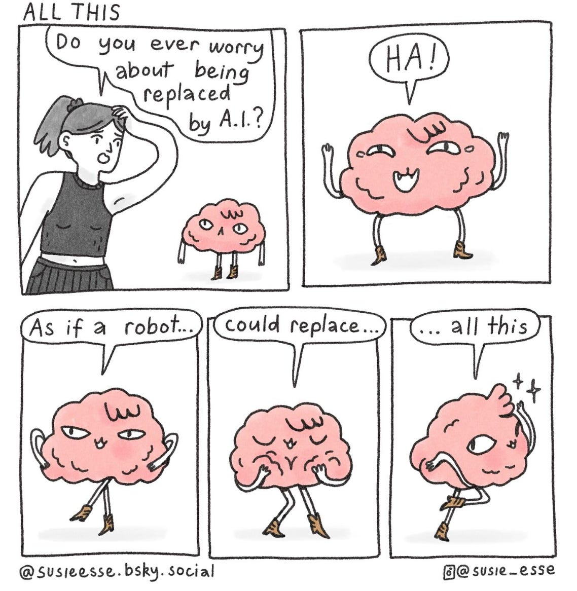
- For reference, the acceptance rate for NeurIPS 2025, the biggest conference in the machine learning and AI community, was ~25%. ↩
- This is what many people in Silicon Valley refers to as "vibes". ↩
- Reddit has pretty stringent policies in place to protect user's privacy, and I don't believe Echo could be deployed using Reddit data without some kind of permissions. ↩
- https://www.seangoedecke.com/ai-sycophancy/ ↩
- https://arxiv.org/abs/2407.07018 ↩